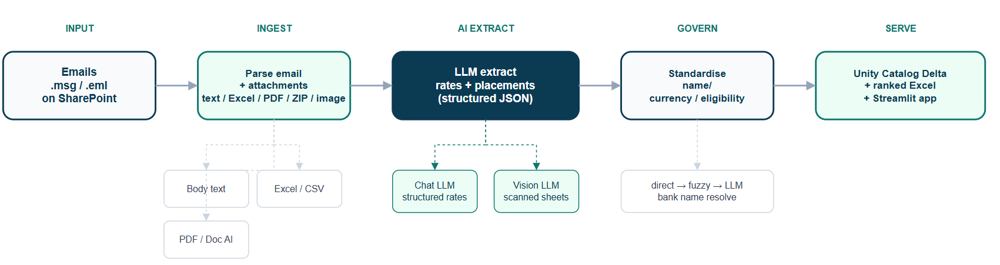
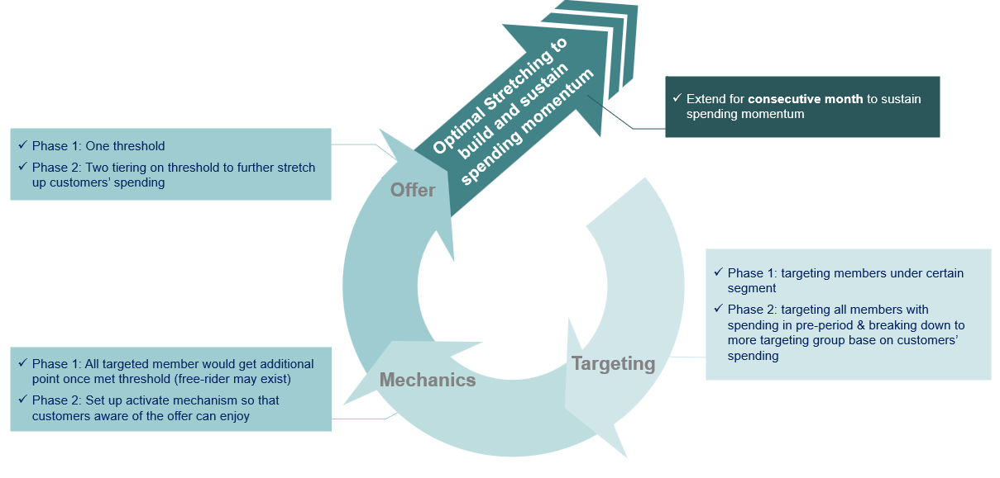
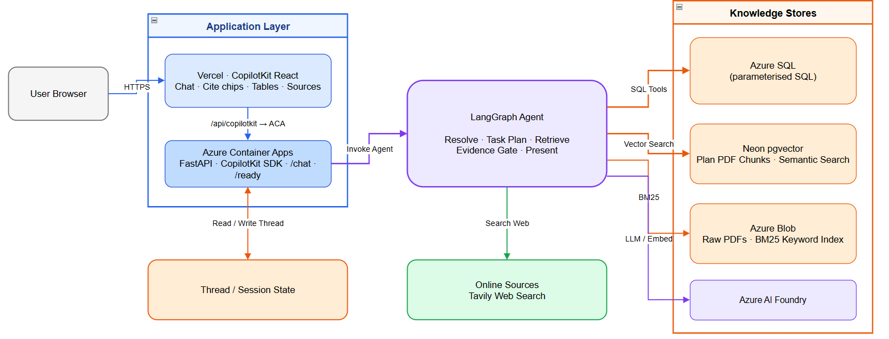

From governed data platforms to working AI agents.
I build data pipelines, analytics products and AI workflows — with experience in hands-on
development, vendor management, stakeholder alignment and the delivery plans needed to put
them into production. 9+ years across aviation, retail loyalty, property CRM and telecom.
Open to data analytics and AI delivery roles · Hong Kong
An analyst’s perspective. An engineer’s approach. A partner who sits with the business.
I combine analytics judgement with hands-on engineering — and I stay close to users.
I clarify what decision or task should change, align stakeholders on scope, and support
adoption after the build lands.
Databricks DE AssociateAzure Data Scientist Associate
Fields I have worked across
AviationAviation & operations data platforms, OCR reporting and AI-enabled workflows
Retail loyaltySegmentation, campaign experiments and customer analytics
Property CRMCross-BU property data, master data management and shared member views for targeting
TelecomSales planning, KPI reporting and self-serve dashboards
Featured demo
DualSource Data Agent
A short walkthrough of the public agent — ask in plain language, inspect the tool/SQL trail,
and read a cited answer. Local warehouse analytics and live web search run as parallel tools.
Fictional seed data only.
Request flow — React frontend, FastAPI backend, Unity Catalog chat history, LangGraph agent, and parallel SQL / web tools.
Selected work
Hands-on projects. Real-world delivery.
Public repos show how I build; selected industry work is summarised with company details
and sensitive metrics masked.
Selected industry work
LLMPythonDatabricksStreamlit
AI treasury workflow
Automates processing of daily bank emails, extracts and validates deposit-rate data into Databricks,
and serves it through an internal Streamlit app.

MDMETLPower BISpark
Group CRM data platform
Built one member view across 20+ business units — master data management, shared identifiers
and governed lakehouse tables that enabled cross-BU campaign design, targeting and insight.
Outcome: one shared member view live across 20+ BUs in Power BI.
OCRDatabricksPythonPower BI
Aviation logistics OCR
Extracted key fields from mixed PDFs (rotated, scanned, skewed), validated them,
and landed clean tables in Databricks for Power BI — reducing manual source-file review.
LLMEDAPython
Facility fault EDA
Used an LLM to cleanse free-text fault logs, map them to equipment and issue categories,
then analyse trends by device class and location for ops follow-up.
LoyaltyExperimentPower BISQL
Campaign analytics loop
Designed spend-stretch campaigns as experiments — RFM segmentation, control groups,
and a post-campaign framework for inflow/outflow and spend vs control that fed the next cycle.

MLXGBoostPythonSegmentation
Category propensity segmentation
Built category propensity models with XGBoost to predict which customers were likely to purchase
or show interest in a category — supporting targeted offers and next-best-action planning.
AI agents & architecture
GitHubAgentsSQLLLM
DualSource Data Agent
Answers questions from local DuckDB analytics with tool/SQL traces, charts and citations,
plus parallel live web search when the question needs online context. Scrubbed portfolio demo on fictional seed data.
Combines structured SQL, vector search and BM25 retrieval in a LangGraph workflow,
with evidence checks and deterministic citations. SQL follows controlled paths rather than unrestricted LLM-generated queries.

Side code
Smaller public scrapers that show how I package collection work.
GitHubAPIsPython
OpenRice restaurant scraper
Collects Hong Kong restaurant listings from OpenRice’s public JSON APIs,
with pagination, deduplication, JSONL/CSV/SQLite output and fixture-based tests.